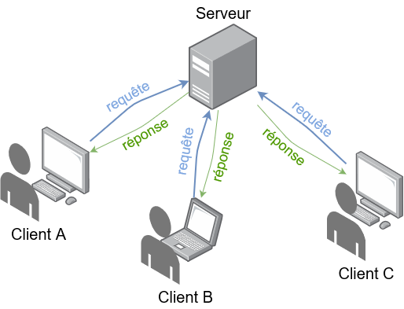

Le nœud du réseau est l’intersection de plusieurs appareils comme :
1 - Routeur :
C’est un appareil permettant le transfert des paquets via des lignes réseaux et ainsi les router et leur donner un port à chacun pour éviter les conflits lors de la transmission à la destination.

Note:
Dans des langages de programmation le transfert des paquets se faits avec les sockets. Qui évoquent le principe serveur/clients.
2 - Concentrateur :
C’est un appareil permettant la concentration des transmission Ethernet de plusieurs équipements sur un même support dans un réseaux local. (« localhost » qui a tendance à être sur le port 127.0.0.1:5000).
3 – Commutateur (switch pour les curieux):
C’est un équipement qui relie plusieurs segments (câbles ou fibres) dans un réseau informatique et de télécommunication et qui permet de créer des circuits virtuels. La commutation est un des deux modes de transport de trame au sein des réseaux informatiques et de communication, l'autre étant le routage (voir paragraphe du routeur).
4 – Les appareils des utilisateurs :
Les ordinateur, téléphones, tablette … bref toute sorte de appareils intelligents parmi ces capacité la connexion à internet peuvent aussi contribuer au partage des informations au sein du réseau informatique en question. Ce sont certainement des appareils dont on ne peut s’en passer dans notre vie quotidienne.